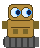
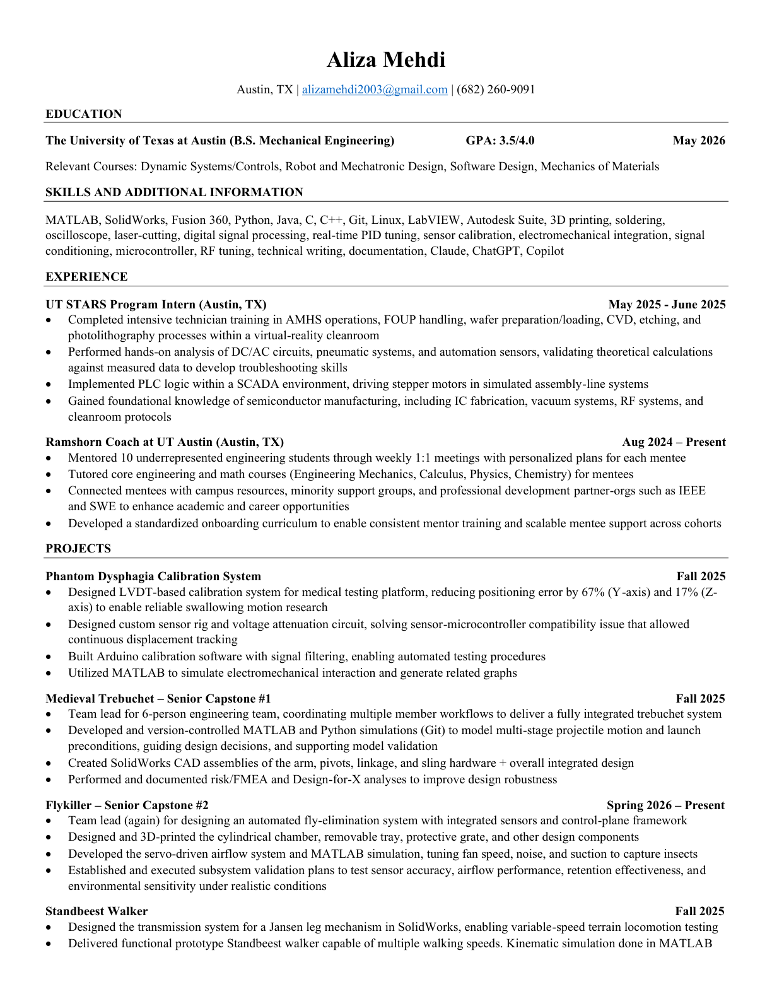

About Me
Hi, I'm Aliza Mehdi — a senior at The University of Texas at Austin pursuing a B.S. in Mechanical Engineering, graduating May 2026. My academic path deliberately spans both mechanical systems and computer science, giving me a dual perspective that lets me speak both hardware and software fluently.
My favorite course so far has been Dynamic Systems and Controls. I love how all the fundamentals of control theory and robotics emerge from a compact set of mathematical principles, forming a common baseline that ties the whole field together. That elegance drew me deeper into robotics, automation, and the design of intelligent systems.
My coursework and interests range widely — from software design to full-on robotics, covering both the hardware, computer, and software stacks. I think in systems: how components talk to each other, where failure modes hide, and how to make the whole more reliable than the sum of its parts.
Outside of engineering, I enjoy scrapbooking, playing pickleball, going on hikes through the green trails Austin has to offer, and baking — especially my specialty, cookie butter truffles, which I maintain are criminally underrated.
What I Bring
Technical Documentation
I believe documentation is a force multiplier — it benefits not just me, but entire teams. Clear, accessible documentation accelerates onboarding, eliminates knowledge silos, and compounds value over time. I bring this discipline to every project I touch, treating written clarity as part of the engineering deliverable.

Robotics & AutomationI believe in reducing workload — both my own and humanity's — so we can all focus on things that truly matter. From LVDT calibration rigs and PLC-driven stepper motors to servo airflow systems and Jansen walking mechanisms, I bring hands-on experience in mechanical automation and control systems design.
💻 Software Engineering
Many of my courses have been in computer science — deliberately. I wanted the software depth to complement my mechanical foundation. I'm fluent in Python, C/C++, Java, MATLAB, Git, and Linux, and I've applied these in both academic capstone work and a real semiconductor manufacturing internship, bridging software and physical systems.
🤝 Leadership & Initiative
I've led multiple senior design teams, coordinating cross-functional workflows under real-world constraints. I'm active in SWE, Pi Sigma Pi (minority academic engineering society), and Ascend (ATV design for disaster relief). For me, leadership means enabling others to do their best work.
Resume

My Projects
Phantom Dysphagia System
LVDT calibration rig for medical testing — 67% positioning error reduction.
Trebuchet (Capstone #1)
Team lead. MATLAB/Python simulations, CAD, and FMEA.
Flykiller (Capstone #2)
Automated fly-elimination system with servo-driven airflow and sensor framework.
Standbeest Walker
Jansen mechanism transmission design with variable-speed locomotion testing.
UT STARS Internship
Semiconductor cleanroom training, PLC/SCADA automation, and circuit analysis.
Leadership & Activities
-
Ramshorn Coach — UT Austin
Mentoring 10 underrepresented engineering students through weekly 1:1 meetings with personalized academic plans. Connected mentees with minority support groups and partner organizations (IEEE, SWE). Developed a standardized onboarding curriculum enabling scalable, consistent mentor training across cohorts.
-
Society of Women Engineers (SWE)
Active member supporting and advancing women in engineering through professional development, networking, and outreach programming across campus.
-
Pi Sigma Pi — Minority Academic Engineering Society
Member of this minority academic engineering society focused on academic excellence and building a supportive community for underrepresented students in STEM fields.
-
Ascend — ATV Design for Disaster Relief
Contributing team member on the Ascend project, designing all-terrain vehicles intended for disaster relief operations — combining mechanical design with real-world humanitarian impact.